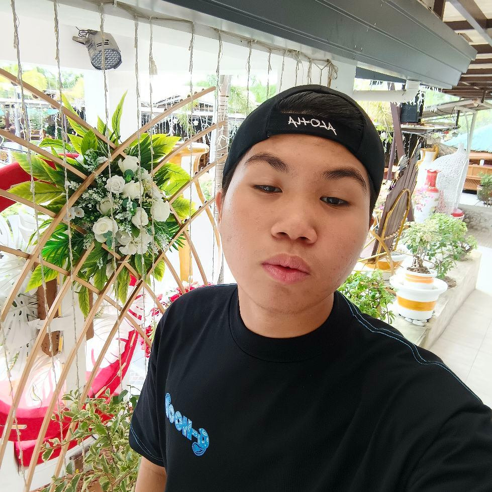

>
Maynard Tulud Ballesteros is an active and passionate individual whose life revolves around both martial arts and creativity.
With a deep dedication to traditional karate, combat arnis, sports arnis, boxing, and kickboxing, he has developed strong
discipline, focus, and determination—qualities that extend beyond his training and into all areas of his life. His commitment
to martial arts reflects his respect for culture, self-improvement, and the pursuit of excellence.
BACKGROUND

>
Alongside his athletic interests, Maynard also enjoys expressing his creativity through web page design, where he combines
technical skill with artistic vision to create visually appealing and functional websites. This balance between physical
mastery and digital creativity showcases his versatility as a person—someone who strives for both strength and innovation.
Through continuous learning and practice, Maynard aims to keep improving his skills, build meaningful connections, and
inspire others to follow their passions with the same dedication and energy that define his own journey.